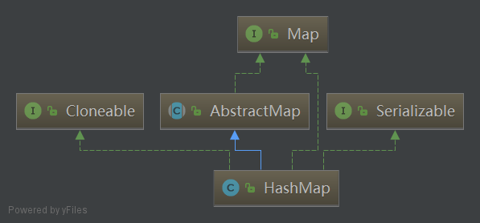
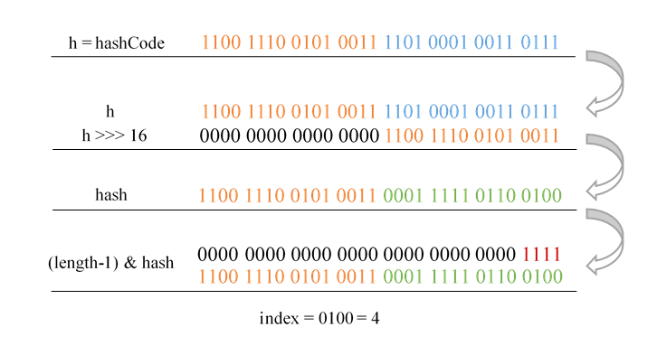
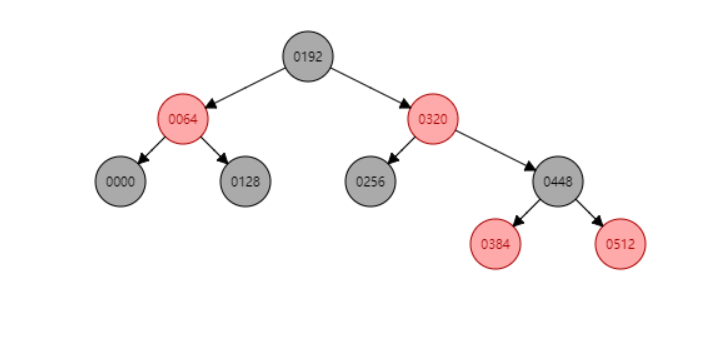
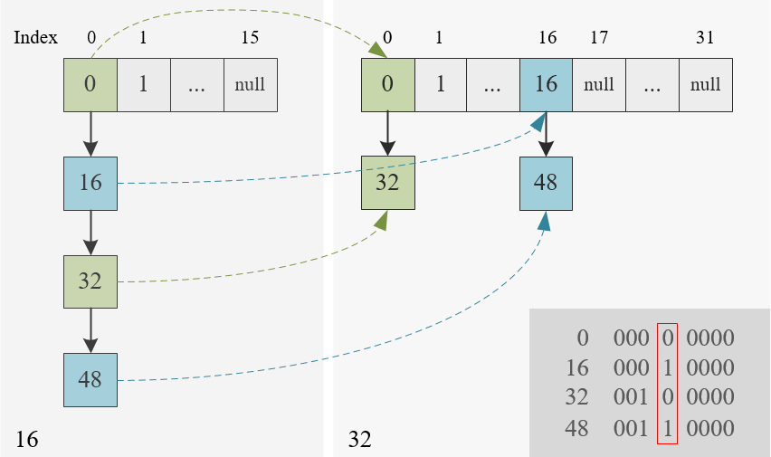

Hash table based implementation of the Map interface. This implementation provides all of the optional map operations, and permits null values and the null key. (The HashMap class is roughly equivalent to Hashtable, except that it is unsynchronized and permits nulls.) This class makes no guarantees as to the order of the map; in particular, it does not guarantee that the order will remain constant over time.
HashMap 是基于散列表的 Map 接口的非同步实现，用于处理映射（键值对）。本文以 JDK 8 的源码为基础，深入分析了 HashMap 的 get&put 方法、扩容机制以及遍历等内容。
HashMap 简介
链表和数组可以按照人们的意愿排列元素的次序，但当查找某个元素时，使用这两种数据结构效率较低。如果不在意元素的顺序，可以用散列表来快速查找所需要的对象。散列表（Hash table，也叫哈希表），是根据键而直接访问在内存存储位置的数据结构。也就是说，它通过计算一个关于键值的函数，将所需查询的数据映射到表中一个位置来访问记录，这加快了查找速度。这个映射函数称为散列函数，存放记录的数字称为散列表。
有时我们知道某些键的信息，并想要查找与之对应的元素，这就需要用到映射（map）。映射用来存放键值对，如果提供了键， 就能够查找到值。HashMap 是散列映射的一种实现，对 key 进行散列，且只能作用于 key，与之关联的 value 不能进行散列。
HashMap 使用链地址法（数组 + 链表）处理哈希碰撞，JDK 8 又加入了红黑树的部分。其继承关系如下图所示：

可见 Map 是一个不同于 Collection 的单独接口。
API
重要参数
HashMap 中定义了几个重要的参数：
1 | // 默认初始容量，必须为2的幂次方，这里为16 |
其中 Capacity 表示散列表中 buckets 的数目，也就是数组的长度； load factor 是负载因子，即数组的填充度；threshold 为扩容的阈值，显然 threshold = Capacity * load factor。当 size 大于 threshold 时，就要进行扩容。
HashMap 中数组的容量必须为 2 的幂次方，主要是为了在取模和扩容时做优化；同时为了减少冲突，HashMap 定位数组索引位置时，也加入了高位参与运算的过程。tableSizeFor 方法保证了这一点。
1 | // 计算最小的2的幂次方，使得其不小于cap，比如 tableSizeFor(100) = 128 |
索引位置的确定
HashMap 的键值对存储在名为 table 的 Node 型数组中。 Node 是 HashMap 中的静态内部类，实现了 Map.Entry<K,V> 接口，包含 key、value 以及 hash 值，并且保存下一个 Node 的引用，属于单向链表节点。
1 | // Node 数组 |
hash 并不是 key 的 hashCode 值，而是 hashCode 高 16 位异或低 16 位的结果。这主要是从速度、功效、质量来考虑的，当 table 数组的 length 比较小的时候，也能保证考虑到高低 bit 都参与到 hash 的计算中，同时不会有太大的开销。
1 | // JDK 8的 hash 算法，通过 hashCode() 的高16位异或低16位实现 |
对于任意给定的 key，相同的 hashCode 必定对应相同的 hash 值。
在确定数组索引位置时，一般采用对数组长度取模的方法，使元素的分布较为均匀。HashMap 中对此过程做了优化，相较于消耗较大的取模运算，采用 (length - 1) & hash 来计算。这种做法非常巧妙，由于 HashMap 底层数组的长度总是 2 的幂次方，它等价于对 length 取模，，但是 & 比 % 有更高的效率。
下面是一个例子：
1 | Map<LocalDateTime, String> map = new HashMap<>(16); |

put 方法
put 方法比较复杂，大致可以分为七个步骤：
若 table 为 null 或 length 等于 0，通过 resize 方法初始化。
计算索引位置，若数组中该位置正好为 null，直接添加新节点，转到 7；否则需要处理 hash 碰撞，转到 3。
若与 first node (存放在数组中，链表的首个节点或红黑树的根节点) 的 key 相同，value 会被覆盖，转到 6；否则转向 4。这里的相同是指 hash 相等且
==或 equals 二者有一个为 true，下同。若节点为 TreeNode，调用 putTreeVal 方法（在 key 相同时会覆盖 value 并返回节点，插入新节点会返回 null），转向 6；否则属于链表，转向 5。
循环遍历链表，若找到 key 相同的节点，value 会被覆盖；否则在最后追加新节点，如果此时链表长度大于
8，则要调用 treeifyBin 方法将链表转为红黑树，转向 6。注意，数组长度小于64时不会转换而是继续扩容。统一处理 key 相同的情况，相同的话覆盖 oldValue 并返回，否则转到 7。
++size若大于 threshold，要进行扩容。最后返回 null。
源码如下：
1 | public V put(K key, V value) { |
JDK 8 利用红黑树快速增删改查的特点提高 HashMap 的性能。下面的例子演示了一次由链表转红黑树的过程：
1 | // 64 的倍数（包括 0）都保存在数组中 index 为 0 的位置 |
正常情况下，红黑树的 first node 为其根节点。转换后的红黑树如下图所示：

上图使用 Red/Blcak Tree 绘制。想了解更多关于红黑树的知识，请参考教你透彻了解红黑树。
get 方法
分析完 put 方法，get 方法就很简单了，直接上源码：
1 | public V get(Object key) { |
扩容机制
扩容（resize）就是重新计算容量，向 HashMap 对象里不停的添加元素，而 HashMap 对象内部的数组无法装载更多的元素时，对象就需要扩大数组的长度，以便能装入更多的元素。
JDK 8 对存在 hash 碰撞的情况做了优化，不需重新计算 index，只需要看看原 hash 值对应 bit（hash & oldCap，oldCap 是原数组的长度， 2 的幂次方）是 1 还是 0 就好了，是 0 的话索引没变，是 1 的话索引变成 index + oldCap。由于原 hash 值对应位置是 0 还是 1 可认为是随机的，因此 resize 的过程，均匀的把之前的冲突的节点分散到新的 bucket 了。
下面是一个容量从 16 扩充为 32 的例子：
1 | Map<Integer, String> map = new HashMap<>(16); |

resize 的源码如下：
1 | final Node<K,V>[] resize() { |
遍历
Map 接口包含三种映射视图，可以很方便的进行遍历：
1 | // key |
如果只需要 key，可以遍历 keySet：
1 | Map<Integer, String> map = new HashMap<>(); |
如果只关注 vaule，可以遍历 values：
1 | for (String value : map.values()) { |
需要 key-value 的话，遍历 entrySet 是最好的选择：
1 | for (Map.Entry<Integer, String> entry : map.entrySet()) { |
当然，使用迭代器可以在循环中使用 remove 等方法，避免 ConcurrentModificationException：
1 | Iterator<Map.Entry<Integer, String>> iterator = map.entrySet().iterator(); |
在 Java 8 中可以使用 forEach + lambda 的方式遍历：
1 | map.forEach((k, v) -> { |
另外，还可以使用 Stream API：
1 | map.entrySet().stream().forEach(e -> { |
除非你还需要用到 Stream API 的一些方法，否则最好使用 forEach + lambda 的方式遍历。